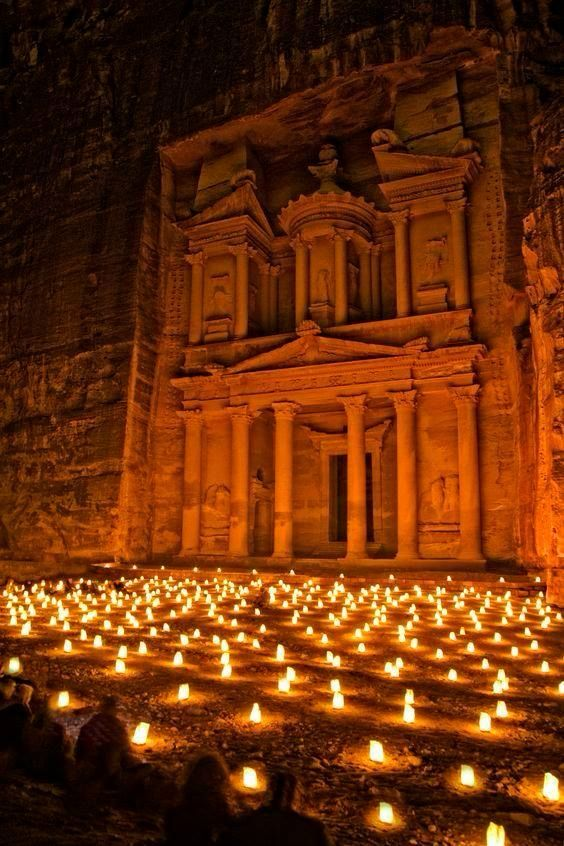

← All tours
2 DAY: Petra, Wadi Rum & Dead Sea

Overview
Self-driving in a new country can be stressful, particularly when part of your journey is in a protected desert with little by way of roads. Relax with the security of an experienced private driver on this transport-only tour of Petra, Wadi Rum, and the Dead Sea, direct from your Amman area address.
You'll arrange your own Wadi Rum accommodation and pay entrance and activity fees as you go.
- Transport only
- Private driver
- 2 days
Itinerary
Day 1
Amman - Petra - Wadi Rum (overnight)
- You'll get picked up
- AmmanStop: 15 minutes
- The New Jerusalem ResthouseStop: 15 minutes - Admission included
- PetraStop: 5 hours - Admission excluded
- Wadi Rum VillageStop: 14 hours
No meals included on this day. No accommodation included on this day.
Day 2
Wadi Rum - Dead Sea - Amman
- After breakfast, jeep tour (2 hours) in Wadi Rum
- Dead Sea RegionStop: 2 hours
- AmmanStop: 60 minutes
No meals included on this day. No accommodation included on this day.
Cost Info
What is and isn't covered in the price.
Price includes
- WiFi on board
- Water
- Air-conditioned vehicle
- English-speaking driver
- Entry/Admission - Tafilah
Price excludes
- All fees and taxes
- Local guides at the sights
- Driver tip
- Other activities, or accommodation in Wadi Rum or at the Dead Sea (including entrance fees)
- Entry/Admission - Petra